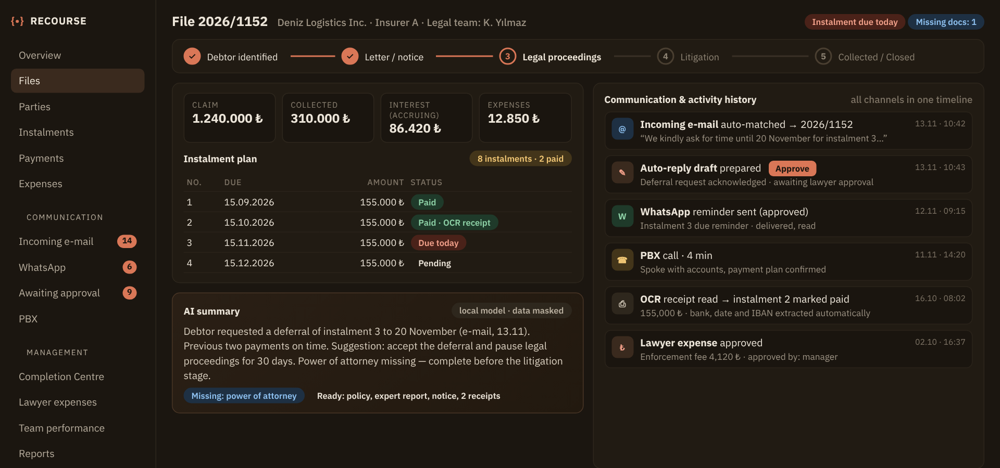
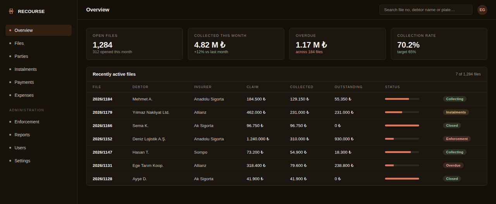
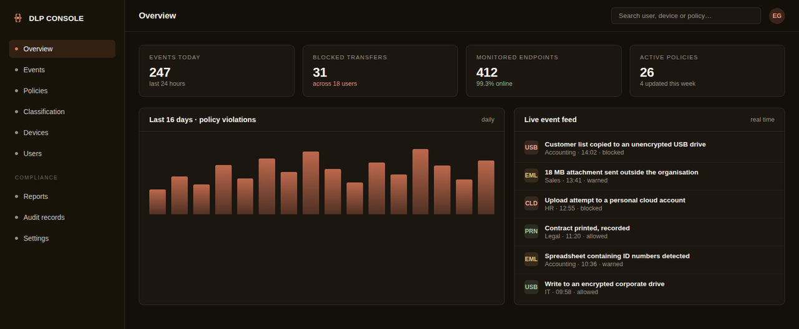
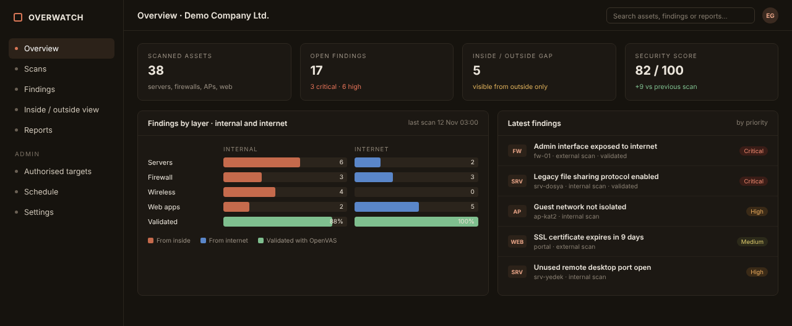

Recourse Tracking System
The problem it solves
Recourse files were scattered across two legacy systems built over the years (MySQL and MSSQL) and Excel sheets. Files for 42 insurers, lawyer expenses, debtor correspondence and collections were tracked in separate places; incoming e-mails and messages were read and entered by hand. Which stage a file was at, which document was missing and what had been collected this month had to be assembled manually every time.
An enterprise platform that manages recourse (subrogation) files on behalf of insurers end to end — from opening to legal proceedings and litigation, from collection to closing. More than 360,000 records from two legacy systems were migrated with zero loss into one modern application, with both systems kept in sync during the transition. Incoming e-mails are read automatically and linked to the right file; routine correspondence is drafted and sent automatically; WhatsApp Business and PBX integration put the debtor one click away. Local AI and OCR read and classify documents; outgoing data is masked and every message to a debtor is sent only after staff approval. The in-house legal team and the external lawyer network work in the same system, which runs on on-premise servers with disk encryption and role-based access.


Technology
Highlights
- Files and 360,000+ records of 42 insurers on one platform
- Zero-loss migration from two legacy databases (MySQL + MSSQL), synchronised during the transition
- Mandatory step-by-step workflow: debtor → letter → legal proceedings → litigation
- Incoming e-mails read automatically and matched to the right file
- Automatic e-mail sending: notices, reminders and replies
- WhatsApp Business integration; conversation history inside the file, every message human-approved
- One-click calling (PBX/SIP) and team performance screens
- Document reading and missing-document tracking with OCR and local AI
- Instalment, payment, expense and interest calculations; bulk payments and bulk status changes
- Lawyer expense approval flow and external lawyer network management
- Automatic alerts on overdue files, live collection rate
- On-premise servers, disk encryption, role-based access, GDPR/KVKK-compliant data masking
DDS Platin — Data Loss Prevention (DLP)
The problem it solves
Nobody knew where company data was going. If an employee copied a customer list to a USB stick, e-mailed it to a personal address or uploaded it to a cloud folder, no one noticed. Off-the-shelf DLP products were expensive with per-user licensing and did not fit the organisation's own rules — and a KVKK audit requires a record of these movements.
Not the installation of someone else's product: a three-layer data security system we wrote from scratch. The Windows agent on every computer logs application and window activity and blocks or reports data leaving via USB, e-mail and the cloud according to policy. Records are collected on the central server; the web and desktop management console is open only to two authorised people. The agent is rolled out to all computers in one go, runs alongside existing antivirus policies and carries no per-user or per-device licence cost.

Technology
Highlights
- Logging of application and window activity
- Blocking and reporting of data leaving via USB, e-mail and cloud
- Sensitive data classification and organisation-specific policies
- Instant alerts on policy violations
- Web console and desktop console options
- Bulk, centrally managed rollout to all computers
- Works alongside antivirus policies
- Console access limited to two authorised people
- No user or device limits — no licence costs
- Log and evidence reports for KVKK audits
Total Loss & Major Claims Management
The problem it solves
In major-loss and total-loss files, notifications, expert assessments, auction bids, market comparables and correspondence with vehicle owners were spread across different screens, spreadsheets and phones. A vehicle's market value and total-loss calculation were redone for every file, and a file's stage could only be learned by asking.
A two-part solution. Claims Cockpit brings the whole process — from first notification to management reporting — onto one screen according to industry standards: all main lines of business, approval authority limits, SBM/TRAMER, expert assignment, arbitration and total-loss/salvage/outstanding processes; it has 10 integrated modules and was presented to the board. Total-Loss Auction Tracking manages the auction of heavily damaged vehicles from registration to sale; it is in active use by the teams, and its embedded vehicle valuation module calculates market value and total loss on the same screen.
Technology
Highlights
- Photo/video expert assessment: replace or repair, part by part
- Fraud detection and audit of expert reports
- 3D damage points and accident scenario reconstruction
- Recourse and reserve management, management reporting
- Total-loss auction process and status tracking; WhatsApp sending from the program
- Incoming messages arrive as notifications linked to the right file
- Market comparables and 7-step vehicle valuation wizard
- Total-loss calculator: damage ratio, salvage, diminished value
- 11-part damage entry, damage history; Quick Sale / Retail / Wholesale price engine
- Sahibinden and arabam.com comparables; staff teach new makes/models inside the app
- All main lines of business, approval limits, SBM/TRAMER, expert assignment and arbitration
- Proof of original part availability, expert assistant and quality control
gokhan.ai — AI workspace
The problem it solves
Employees were uploading company documents to public AI tools. What was uploaded, by whom and where that data went was unknown.
A closed, company-managed workspace where employees upload Excel, PDF and Word documents and ask AI about them. Who did what and when is logged; conversations, however, are private — not even administrators can read them. No screen opens until the KVKK privacy notice is accepted, and logins from a new device are flagged.

Technology
Highlights
- Upload Excel, PDF and Word and have them analysed
- User management and login records
- KVKK privacy notice and consent record
- Device recognition and new-device alerts
- Per-user usage limits
- Private conversations — administrators cannot read them
- Same experience on phone and computer
- Documents summarised on the server to cut costs
- The chat box on our website runs on the same platform
OVERWATCH — Security Audit Platform
The problem it solves
Organisations usually learn about security gaps after an incident. What is exposed on servers, the firewall and the wireless network is not checked regularly, and the difference between what is visible from the internal network and from the internet is unknown.
An audit platform with its own web console that scans servers, the firewall, wireless access points and web applications from both the internal network and the internet and compares the two views. Findings are verified with Greenbone/OpenVAS and turned into a prioritised, readable report. Only targets with written authorisation are scanned; no attacks or password cracking are performed. Where proof of exploitation is needed, we work with an independent penetration testing firm. The platform is currently being extended to bring endpoint monitoring and event logging, remote management, backup tracking and phishing awareness training into one console, so each client's devices, firewall and access points can be followed from the same screen.

Technology
Highlights
- Scanning of servers, firewall, wireless network and web applications
- Comparison of the internal and internet views
- Findings verified with an independent scanner
- Prioritised report in management language
- Diff report against the previous scan
- Authorised targets only — no attacks or password cracking
- Authorised WiFi/BLE tests for the wireless layer
- Joint work with an independent penetration testing firm when needed
INTRANET — Corporate Staff Portal
The problem it solves
Announcements got lost in e-mail and WhatsApp groups and nobody knew who had read them. Check-in/out, break and leave records were kept in separate spreadsheets; support requests came in by phone and could not be tracked.
A corporate intranet that brings all of the staff's daily tasks — from announcements to leave, from working hours to support requests — into one portal. Who read each announcement and when is recorded; check-in/out and break times are logged automatically, leave requests go through manager approval, and support requests are numbered and tracked until resolved. All processes are reportable and KVKK documents are acknowledged by staff through the portal.
Technology
Modules
- Announcements with read-receipt tracking
- Time & attendance: staff check-in/out records
- Break tracking and duration reports
- Leave requests, manager approval and leave balance
- Support requests: creation, assignment and tracking
- KVKK documents, policies and consent records
- Adaptable to other organisations' structures
BMS — Quote & Job Management Platform
The problem it solves
Every quote was built from scratch in Excel, and client-specific prices and freelancer fees had to be hunted down in different files. Which quotes had been sent, which approved and the total volume of work could only be worked out by opening files one by one.
A web platform that brings the entire workflow — from preparing quotes to tracking revenue — into one console. Clients, client-specific rate cards, the freelancer team and suppliers are kept in one place; quotes are built from these records in minutes and followed through draft → sent → approved/rejected. Revenue is calculated in real time from approved quotes, and the dashboard shows statistics and recent activity at a glance.
Technology
Modules
- Quote creation: draft → sent → approved / rejected
- Client-specific rate card management
- Freelancer team, expertise and fee information
- Client and supplier records
- Revenue status: total volume of approved quotes
- Statistics and recent activity dashboard
- User and permission management
- In live use
Corporate Network & Infrastructure Management
Not a one-off installation but the ongoing management of a living infrastructure. On the FortiGate firewall: allowed-device policy, web filtering, guest network separation, remote-access VPN and PBX traffic; with cloud-based endpoint security: USB and device control, content filters and staff/manager profiles; with Active Directory: bulk domain joining of computers and central management via GPO. Servers are virtualised on VMware ESXi; backups, SSL certificates and hosting of internal software also run on this infrastructure.
Technology
Highlights
- Allowed-device policy and web filtering
- Network separation with guest WiFi
- Remote-access VPN and PBX (SIP) traffic
- Rule and open-port clean-up
- Leak prevention with USB / device control
- Social media, AI and illicit content filters
- Bulk domain joining and central management via GPO
- Virtualisation, backup and SSL certificate management